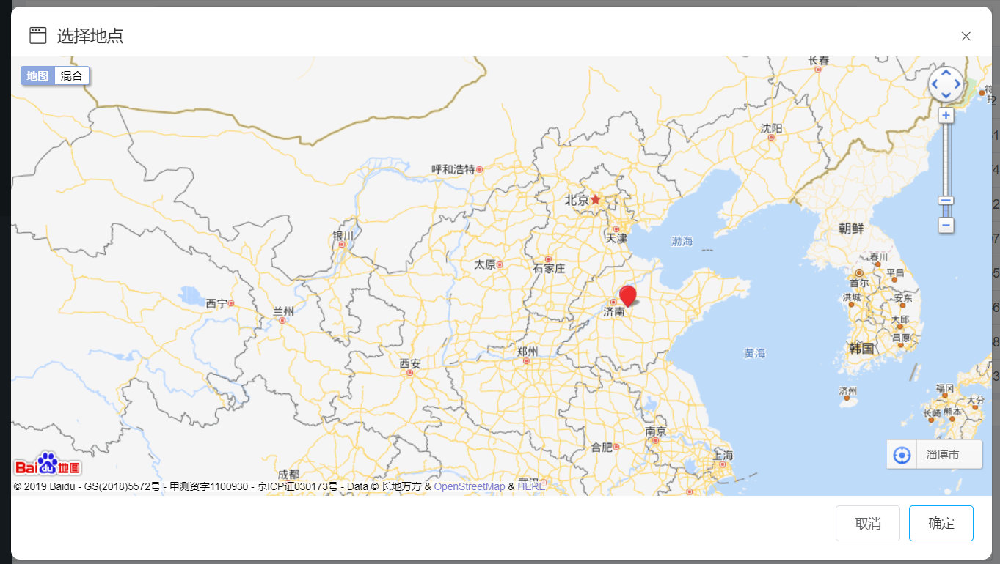

[组件]baiduMap 百度地图
组件路径 src/components/Maps/BaiduMap.vue，基于【Vue Baidu Map】组件的二次开发，后续添加相关百度地图功能，请先按照此组件的文档说明进行开发。

使用示例
<baiduMap :mapData='dataModel' ref="baiduMap" @FunGetPoint="getPointGT($event)"></baiduMap>
<script>
import baiduMap from '@/components/Maps/BaiduMap' // 引入组件
components: {baiduMap} // 注册组件
</script>
【必填】mapData：类型【object】，传给组件的一个包含经纬度的数据对象
【必填】ref：此组件的标识符，用于一些基于此标识符的操作
【必填】 @contentChangeFun：通过此方法获取组件返回来的经纬度数据
dataModel： {
lng: '', // 经度
lat: '' // 纬度
}
baiduMap Methods 百度地图方法
// 接收地图子组件返回来的地图上点的经纬度
getPointGT (res) {
this.dataForm.lng = res.lng
this.dataForm.lat = res.lat
}